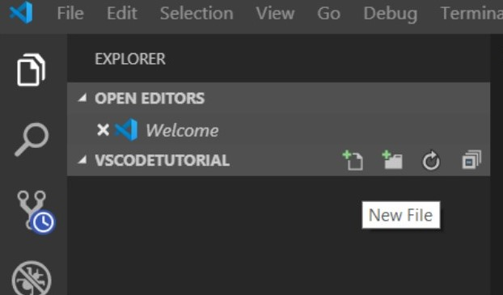
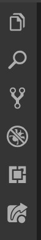

Starting a Project in Visual Studio Code
July 21, 2019 | Marcie Ferrick

Whether you're creating new files, or using files saved on your local computer or a GitHub repository, learn how to begin your project in Visual Studio Code.
You’re super excited about learning to code, maybe you’ve done some self-studying, maybe you’ve joined a coding bootcamp, and you’ve downloaded and installed Visual Studio Code. You’re ready to get started… but, you have no idea how. Don’t worry, everyone is a beginner at some point, and I’ve got you covered. Follow the steps below to start your project in VS Code, depending on whether you’re starting from scratch, using files you have stored on your local computer, or using files from a GitHub repository. Then, read on to learn about some useful VS Code extensions.
Starting From Scratch
- Create a new folder on your local computer where you will store your project files.
- In VS Code, click “File”, and select “Open Folder.”
- From there, navigate to your project folder and click “select folder.”
- Now you should see the name of your project folder under “Open Editors” to the left of your screen.
- On the same line as your project folder name, you’ll see four icons. The first one (from left to right) is the “new file” icon. 
- Click the “new file” icon and name your file. Press “enter.”
Remember to use the appropriate extension when naming your file so its contents will be interpreted accurately. For example, your HTML code will be written in a file with the .html extension, and your CSS styling will be written in a file with the .css extension. I recommend starting with an “index.html” file and a “style.css” file. - Now, you are ready to begin working on your files! Simply click the file name you’d like to work in from the list on the left. Be sure to store all files needed for your project, such as images you'd like to use, in the project folder you created on your local computer so they’ll appear in the list!
Starting With Files Already Saved on Your Local Computer If you’ve already got your project files saved on your local computer, follow steps 2, 3, and 7 above, and you’re ready to go. Easy peasy!
Starting With Files Stored in a GitHub Repository To do this, you will need to clone the GitHub repository by opening the repository and clicking the “clone or download” button. For more information about cloning a repository in GitHub, click here.
How to View Your Webpage in a Browser You’ve typed up a bunch of HTML code, added a little CSS styling, now you want to know what it actually looks like, right? To view the webpage in a browser, simply open the index.html file stored in your project folder on your local computer. Be sure to reload the page each time you make changes! Hint: Turn on “Auto-save” in the VS Code "file" menu so you don’t have to worry about saving your work. Alternately, you can use the LiveServer extension in VS Code (keep reading to learn more) to view your page.
Helpful VS Code Extensions Visual Studio Code has tons of extensions to integrate with other systems and help you work more efficiently. See below for some of my favorites. To search for extensions, click the extensions icon from the vertical menu on the left side of your screen (second from the bottom in the screenshot to the right) . 
LiveShare - This one is a must if you’ll be pair programming/working collaboratively with other programmers. LiveShare allows multiple users to work within the same project at the same time. You’ll be able to view other users’ cursors in real time, so you know exactly what they’re working on.
GitHub - Integrates GitHub and its workflows into VS Code. Be sure to read the directions for this one thoroughly; you’ll need to create a new personal access token from GitHub (but don’t worry, the directions walk you through that).
LiveServer - Allows you to view your live webpage with changes updating continuously in real time.
If you get stuck, check out VS Code’s help menu. Use the interactive playground to test out editing features, view tutorial videos, and read tips and tricks to get you going. You got this!